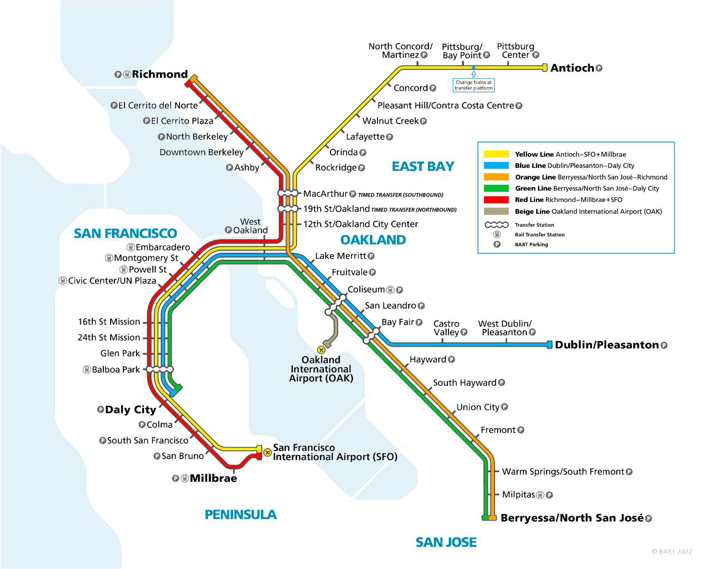
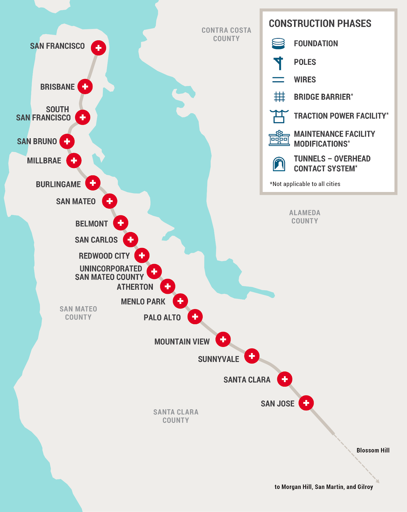
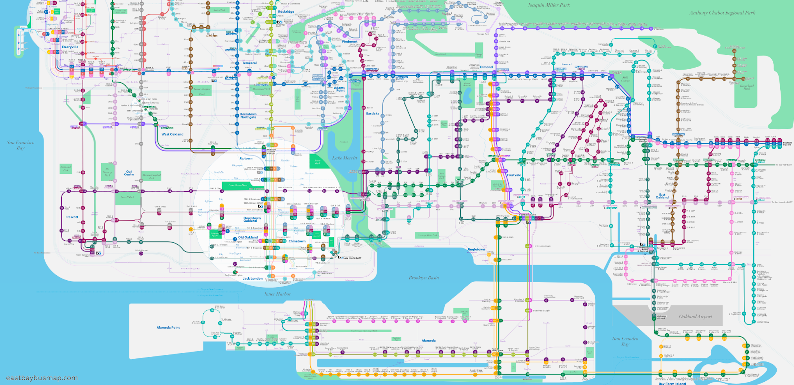
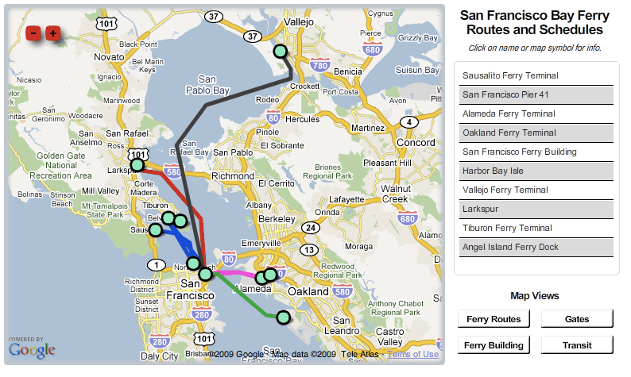
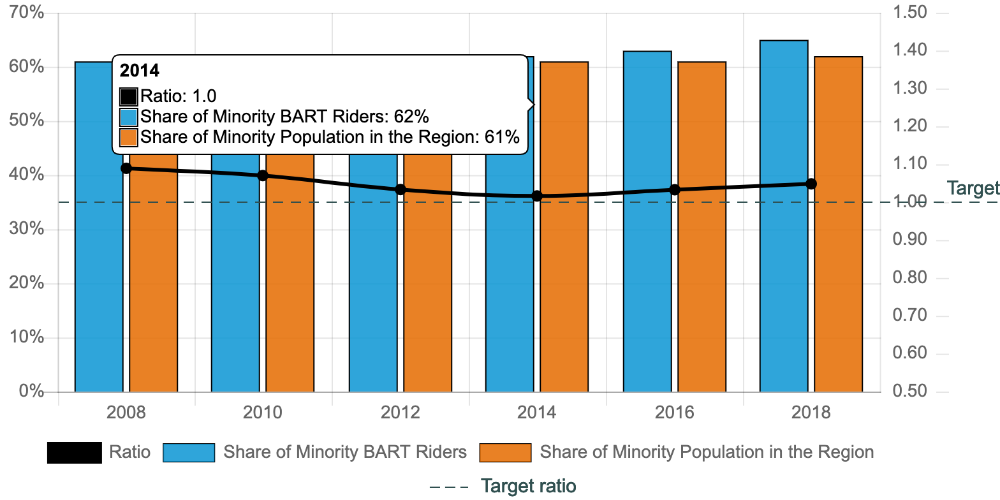

Following WWII, many people migrated to the bay area in pursuit of new opportunities. Because the Bay had previously been more agriculturally focused in industry the population numbers had reflected that, but soon shifted to reflect the demand for more technological research as a result of the war. The increase in demand for war technologies in particular had propelled this shift in industry.
“The conversion of the orchard-rich Santa Clara County from "The Valley of Heart's Delight" into Silicon Valley can be directly traced to wartime electronic research,” (Nolte).
San Francisco’s population alone grew from 634,000 to 774,821 in the span of a decade from 1940-1950. Counties outside of San Francisco, or other areas of the Bay, also doubled in population as a result of new industry. Public transportation services grew to accommodate this population growth within the Bay.
These public transportation services that are more relevant to us include:
BART (Bay Area Rapid Transit)

CalTrain

AC Transit (Alameda and Contra Costa)

Ferries

Accessibility Programs/Bay Area Community Contributions:
Focus: BART
BART Equity Assurance

As illustrated in this diagram above, BART aims to maintain the 1:1 ratio between the population of minority groups within BART station regions and the share of minority BART riders. This means ensuring that BART is equitably accessible to these groups.
BART Housing Accomodations

Depicted above is the progression of BART’s plan to develop company land near each station into both market rate and affordable housing for individuals who work throughout the Bay.
BART Employment Contributions
As seen in the diagram above, BART has also bought several acres of adjacent land to build both commercial and retail offices for the development of new job opportunities to help boost employment.